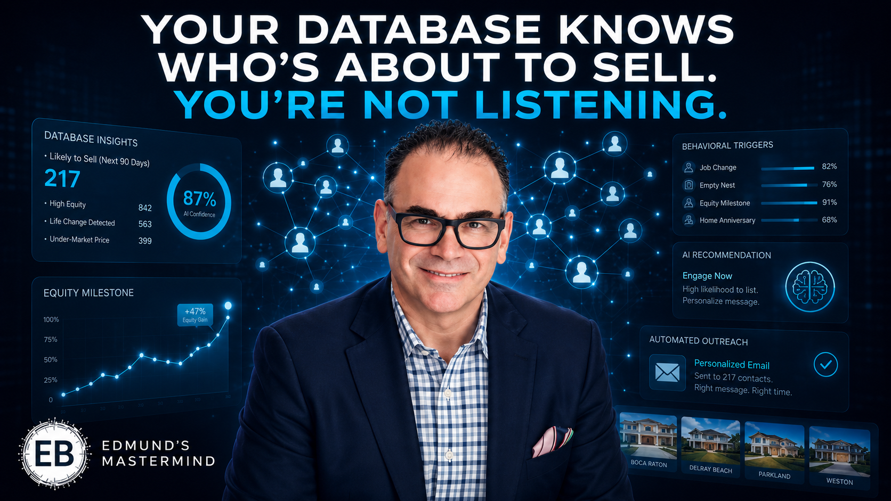

Three AI personalization systems, built live inside the CRM you already own. This is your full build-along workbook — prompts, worksheets, and a 30-day plan.
Download the Workbook (PDF)Why you're here: Right now you treat 1,000 contacts like one audience. Today you fix that — building systems that make every contact feel personally known, at the scale of your entire list, without adding hours.
Your goal today: Leave with three working personalization systems wired into the CRM you already use — and the exact prompts to run them.
Success metric: Within 30 days, deploy at least one behavioral trigger and measure a lift in reply/engagement from your re-engaged segment. Target: reactivate 10+ dormant contacts and book 2+ new appointments from automated personalization.
Routes the right listing to the right buyer based on what they actually click and revisit.
Easiest — start hereTimes your seller outreach to financial and life milestones so you reach them the week they're ready to list.
Core pipeline builderFires a personalized video in your voice when a cold lead returns to your site.
Advanced — build lastThe spine of all three: specific behavioral signal → automated response → revenue moment captured. Learn the pattern once, build personalization triggers for any segment.
Every modern CRM and email platform tracks engagement data you're probably ignoring: which listings a contact opens, how many times they revisit a property page, what price band they keep returning to, which neighborhoods they linger on. This is intent data — far more predictive than anything a buyer tells you in an intake form, because behavior doesn't lie.
The matchmaker turns that signal into action. Instead of one weekly "new listings" blast to everyone, you set rules: when a contact views waterfront listings twice in seven days, they automatically get a curated set of matching properties — within hours, not at the next newsletter cycle.
Most agents won't touch behavioral automation for another 6–12 months — they think it requires a developer or an expensive new platform. It doesn't. The moment you deploy it, you operate on a different level than your entire local competition, and the moat widens every week your system learns more about your database.
I use [CRM NAME] for my real estate database. List every behavioral and engagement data point it can track on a contact (email opens, link clicks, page views, listing views, form activity, etc.). Then rank them by how predictive each is of buyer intent, and tell me which ones I can build automated triggers on.
Help me design behavioral trigger rules for my buyer database in [CRM/EMAIL PLATFORM]. For each rule, specify: the trigger condition, the automated action, the timing, and the message angle. Start with these scenarios: (1) contact views the same listing 3+ times, (2) contact views 2+ listings in one neighborhood in a week, (3) contact's browsing price band increases. Keep it implementable without a developer.
Write a short, personal email that goes out automatically when a buyer revisits a waterfront listing. It should feel hand-written, reference their apparent interest without being creepy, include 2-3 matching listings, and end with a low-friction CTA to book a showing. Give me 3 subject line options. My tone: [warm/professional/luxury].
Design a weekly automated report that surfaces my 10 highest-intent buyers based on behavioral signals in [CRM]. Define the scoring logic (recency, frequency, price-band consistency) and format it as a prioritized call list with a one-line "why now" for each contact.
Specific ways I can use this for my business:
Deals currently lost to faster agents per month: · Recovered commission potential: $/mo
First 3 triggers I'll build this week:
Sellers don't move because you sent a newsletter. They move when their situation changes: equity crosses a threshold that funds the next purchase, kids leave for college, a refinance window opens, a job relocates them, or local comps suddenly make their home worth more than they realized.
The milestone trigger maps these moments and times your outreach to land right when the seller's internal clock is ticking. You're not "checking in" — you're showing up with relevant intelligence at the exact moment it matters.
Equity and milestone data is increasingly accessible, but almost no agent systematizes outreach around it. While competitors send the same "thinking of you" card every quarter, you send precisely-timed, individually-relevant equity updates. The relationship compounds, the trust compounds, the listings follow.
I want to build a seller-outreach system for my real estate past-client database, timed to equity and life milestones. Help me create a milestone framework: list the financial, market, and life-event milestones that signal a homeowner may be ready to sell, and for each one define the data I'd need, where to find it, and the outreach trigger.
Write a personal email to a past client whose home has crossed a meaningful equity milestone. It should share the insight as helpful intelligence (not a pitch), reference their specific situation, and offer a no-pressure equity/options review. Give me a warm version and a more direct version. My brand voice: [describe].
Help me design rules to automatically segment my past-client and seller database into: (1) ready-to-list-now, (2) nurture/12-month window, (3) long-term. Define the signals that move a contact between segments and what automated touch each segment receives.
Write an automated message that fires when recent comps push a homeowner's estimated value into a higher tier. Lead with the specific market insight, make it feel like proprietary intelligence I'm sharing, and CTA to a private valuation conversation. 3 subject line options.
Specific ways I can use this for my business:
Listings currently lost on timing per year: · Recovered listing potential: $/yr
First 3 milestones I'll build triggers for:
AI video and voice tools can now generate a personalized video — your face, your voice — that drops in a contact's name and property interest dynamically. When a lead who went quiet returns to your website, the system fires a short, personal video: "Hi [Name], saw you were looking at [neighborhood] again — here's what's new." It feels one-to-one. It's fully automated.
This is the advanced module. Highest wow-factor, most setup — which is exactly why we build it last, after your foundation systems are running. Don't start here; earn your way here.
This is genuinely new, and most agents are intimidated by it. The ones who deploy it now own a differentiation that takes competitors a year or more to copy — and by then you'll have a library of reactivated relationships and closed deals to show for it.
Write a 30-second personalized video script for a real estate AI-clone tool. It fires when a previously-cold lead revisits my website. Use merge fields for [First Name] and [Neighborhood/Interest]. Tone: warm, low-pressure, genuinely helpful. End with one simple CTA. Give me 3 variations for different lead types: buyer, seller, investor.
I want to build an AI-clone personalized video system for real estate lead re-engagement, triggered by website revisits. Walk me through the tool stack I'd need (video/voice clone tool, website tracking, automation layer, CRM connection), how they connect, and a realistic setup sequence for a non-technical agent. Flag where I'd want help.
Help me define the automation logic for an AI-clone video that fires on website revisit. Specify: what counts as a "revisit worth triggering," frequency caps so it doesn't feel stalker-ish, which lead segments should and shouldn't receive it, and the follow-up sequence after the video sends.
Design a simple tracking framework to measure whether my AI-clone re-engagement videos are working: what metrics to watch (view rate, reply rate, appointments booked), how to attribute revenue, and a 30/60/90-day benchmark for a database of [SIZE].
Specific ways I can use this for my business:
Dead leads I write off monthly: · Reactivation revenue potential: $/mo
First 3 steps I'll take this week:
Fair Housing is non-negotiable.
Behavioral targeting that sorts or steers contacts by neighborhood demographics, family status, or any protected class — even indirectly — can trigger a steering complaint. Personalize on behavior and stated preference, never on protected characteristics.
My guardrail check: Before launching any trigger, I will confirm it personalizes on behavior or stated preference only.
Based on today's session, I commit to:
Primary System Focus: I will master first because it will recover an estimated $ per month in lost opportunity.
Time Investment: I will invest hours per week implementing these systems.
Success Metrics:
Dormant contacts reactivated (30 days):
New appointments from automation (30 days):
Revenue increase target (90 days): $
Accountability Partner:
Weekly Check-in: Every at 30-Day Review Date:
My Signature: Date:
Your database already knows who's ready to buy, who's ready to sell, and who needs to hear from you today. The only question is whether you'll use what it knows — or keep blasting "Dear [First Name]" to people who stopped reading months ago.
Make every client feel like your only client.
Download the Workbook (PDF)